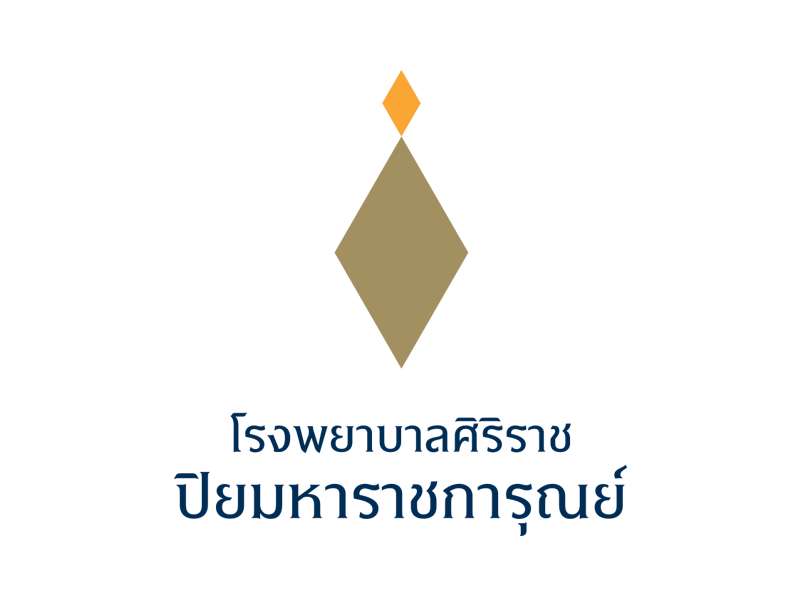

ตรวจสอบอุปกรณ์ลานจอดประจำวัน
โรงพยาบาลศิริราช ปิยมหาราชการุณย์ • หน่วยงาน IT
Daily Parking Equipment Inspection
บันทึกผลตรวจอุปกรณ์ลานจอด แยกจากระบบ Store โดยอิสระ และมี Report รายเดือน

จุดตรวจทั้งหมด
0
รายการปกติ
0
รายการวันนี้ผิดปกติ
0
รายการวันนี้ตรวจแล้ววันนี้
0
รอบข้อมูลการตรวจ
บันทึกแยกจาก StockChecklist อุปกรณ์ลานจอด
0 รายการประวัติการตรวจ
งานผิดปกติค้างอยู่
0
รายการแจ้ง PM / กำลังดำเนินการ
0
รายการรออะไหล่
0
รายการซ่อมเสร็จ / ปิดงาน
0
รายการทั้งหมดรายการผิดปกติ / งานค้าง
รายการผิดปกติจาก Daily Check จะเข้าหน้านี้อัตโนมัติ • หากจุดเดียวมีหลายอุปกรณ์ ต้องเลือก Asset ที่เสียให้ถูกตัว
งานผิดปกติทั่วไป / CCTV Offline
เพิ่มงานทั่วไปเองได้ • CCTV Offline สร้างงานอัตโนมัติเมื่อ Agent ส่งข้อมูล • เปลี่ยนสถานะตามขั้นตอนและบันทึกผู้รับผิดชอบ
ประวัติงานที่ซ่อมเสร็จ / ปิดงาน
0 รายการจัดการโซน / จุดติดตั้ง
คุณเพิ่มโซนเองได้โซนที่เพิ่มจะถูกบันทึกใน MongoDB และใช้เลือกตอนเพิ่มรายการตรวจ โดยไม่เกี่ยวกับยอด Stock
เพิ่มรายการตรวจ
แยกจากระบบ Stockทะเบียนรายการตรวจ
ตัวกรอง Report
JPARK • รายงานตรวจสอบอุปกรณ์ลานจอดประจำวัน • โรงพยาบาลศิริราช ปิยมหาราชการุณย์
รอบตรวจ
0
ผลปกติ
0
ผิดปกติ
0
ไม่ได้ตรวจ
0
จำนวนจุดผิดปกติรายวัน
อุปกรณ์ที่พบปัญหาบ่อย
Top Issues⚠ งานค้างที่ยังแก้ไม่เสร็จ
ดึงรายการผิดปกติจากวันก่อนที่ยังไม่ซ่อมเสร็จมาแสดงอัตโนมัติ